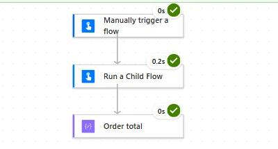
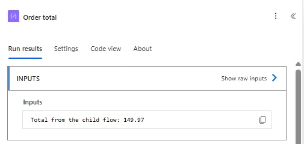

- Power Automate
- Level 4 · Reliable flows · 6 of 7
Child flows
As flows grow, the same steps appear in several of them: look up an approver, calculate a price, write a log entry. A child flow holds that logic once. Parent flows call it with Run a Child Flow, pass inputs, and get outputs back.
The demo
The child flow Calculate total takes Quantity and Unit price and returns the total. The parent calls it with 3 and 49.99.


The three parts
| Where | Action | Purpose |
|---|---|---|
| Child | Manually trigger a flow | Defines the inputs (Quantity, Unit price) |
| Child | Respond to a Power App or flow | Sends the outputs back (total) |
| Parent | Run a Child Flow | Calls the child, fills the inputs, waits for the response |
The child returns mul(triggerBody()?['number'], triggerBody()?['number_1']). Inputs are named number, number_1 internally, in the order you added them.
Rules to know
- Parent and child must be in the same solution.
- The child must respond within 120 seconds, or the parent times out. For long work, respond first and continue afterwards.
- Set the child's connections under Run only users to use the child's own connection, not one provided by the caller, or the call fails.
- A flow has a 500-action limit; splitting into child flows is the recommended way to stay under it.
New to this? Start from the basics optional
Parent / child: the parent is the flow that calls; the child is the flow being called.
Reuse: fix a bug in the child once, and every parent that calls it gets the fix.
Response: the child's answer to the parent. Without a response action, the parent can't get outputs back.
Build it step by step optional
- In a solution, create an instant flow Calculate total. Add two Number inputs: Quantity and Unit price.
- Add Respond to a Power App or flow with a Text output total =
mul(triggerBody()?['number'], triggerBody()?['number_1']). Save. - On the child's details page, edit Run only users and set connections to the child's own connection (only needed if it uses connectors).
- Create the parent in the same solution. Add Run a Child Flow, pick Calculate total and enter 3 and 49.99.
- Add a Compose with the total output. Test the parent.
Common mistakes
- Building the child outside a solution. It won't appear in Run a Child Flow.
- Putting a long approval inside a child the parent waits on. The 120-second limit ends the call.
- Changing a child's inputs without updating every parent. Treat inputs like a contract.